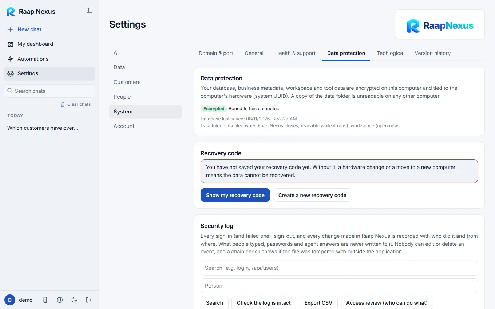

Raap Nexus
Raap NexusData protection and sign-in security
Encryption tied to this computer, the recovery code, a second sign-in step with an authenticator app, and a tamper-evident security log.
Data protection
Your database, business metadata, workspace and tool data are encrypted on this computer and tied to its hardware identity. A copy of the data folder on another computer is unreadable. Open Settings > System > Data protection.

Recovery code
Without it, a hardware change or a move to a new computer means the data cannot be recovered. Press Show my recovery code, write it down or print it and keep it somewhere safe, away from this computer. It is shown only once. If you lose it, press Create a new recovery code: the old one stops working immediately.
Anyone with the recovery code and a copy of your data folder can open the data. Treat it like a master key.
Second step when signing in
An authenticator app (Google Authenticator, Microsoft Authenticator, Authy, 1Password and others) adds a 6-digit code to the password.
- Open Settings > Account > My account and find Second step when signing in.
- Scan the picture with your authenticator app and type the code it shows.
- Save the ten recovery codes shown. Each works once if you lose the phone, and they are shown only now.
The owner can require the second step for people. Someone it applies to who has not set it up can sign in but do nothing else until they do. If you lose your phone and recovery codes, another administrator switches your second step off under Users; if you are the only one, run python raapnexus.py mfa-reset USERNAME on this computer and restart Raap Nexus.
Security log
Every sign-in (and failed one), sign-out and every change made in Raap Nexus is recorded with who did it and from where. What people typed, passwords and agent answers are never written to it. Nobody can edit or delete an event, and Check the log is intact shows if the file was tampered with. You can search it, export it as CSV, and get an access review (who can do what).